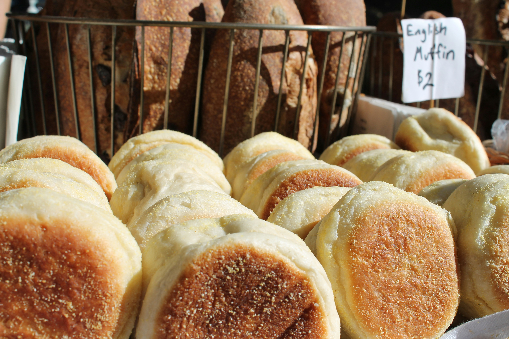

Ingredients
- 1 1/4 cups warm water
- 1 tablespoon sugar
- 1 teaspoon instant dry yeast
- In a seperate bowl:
- 2 tablespoons melted butter
- 2 3/4 cups all-purpose flour
- 1 teaspoon of salt
- Cornmeal for dusting
Instructions
- Pre-heat oven to 350º (185º C).
- Bloom warm water, yeast, and sugar for 10 minutes.
- Pour all ingredients into a standmixer and knead for five minutes.
- Oil bowl and proof for one hour.
- On a floured surface, knead with hands for another five minutes, adding flour as needed.
- Spread out the dough into a square shape.
- Using a cup cut out 10-12 muffins.
- Sprinkle cornmeal on both sides of english muffin.
- Cook on a griddle until both sides are golden.
- Finish baking for 10-13 minutes.
- Enjoy!